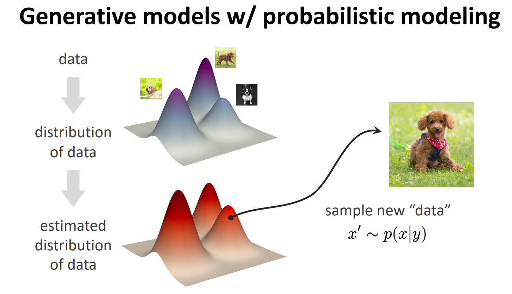
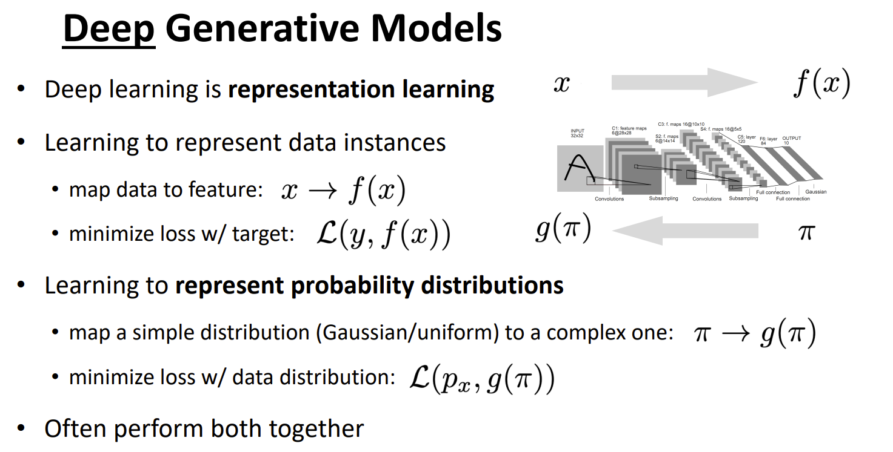
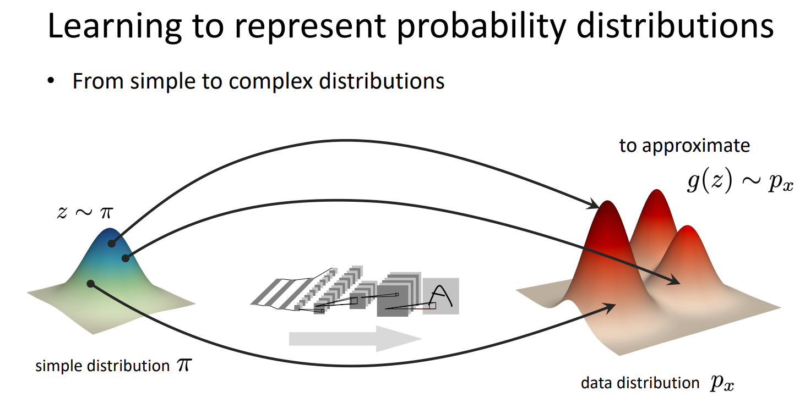

Generative Models
Generative Models
参考 MIT6.S978 的课件
生成式模型的特点
-
There are multiple or infinite predictions to one input. 即它不是学习一个“函数”的形式
-
Some predictions are more “plausible” than some others.
-
Training data may contain no exact solution.
-
Predictions may be more complex, more informative, and higher-dimensional than input.
-
除此之外，还有一个特点是：生成结果应该是一个结构化的东西，而不是单一、原子的东西。比如对于生成式推荐 TIGER，它生成的 tokens 之间是有联系的（例如每 4 个 token 对应一个码字）；而判别式推荐 SASRec 也会生成预测物品，但这个预测物品是原子的，所以更像是对物品序列的多分类问题。这也是为什么 softmax 只能算多分类而不是生成模型。
Discriminative vs. Generative models
discriminative: “sample” x “label” y (one desired output)
generative: “label” y “sample” x (many possible outputs)
Generative models can be discriminative: Bayes’ rule
discriminative models can not be generative.
生成过程

Deep Generative Models

从简单分布映射到复杂的真实数据分布：

All articles on this blog are licensed under CC BY-NC-SA 4.0 unless otherwise stated.